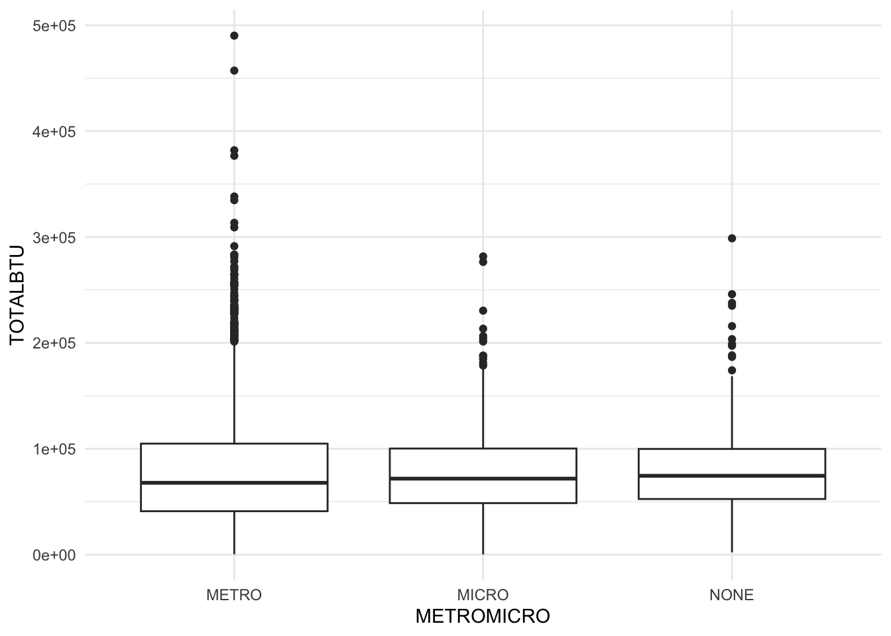
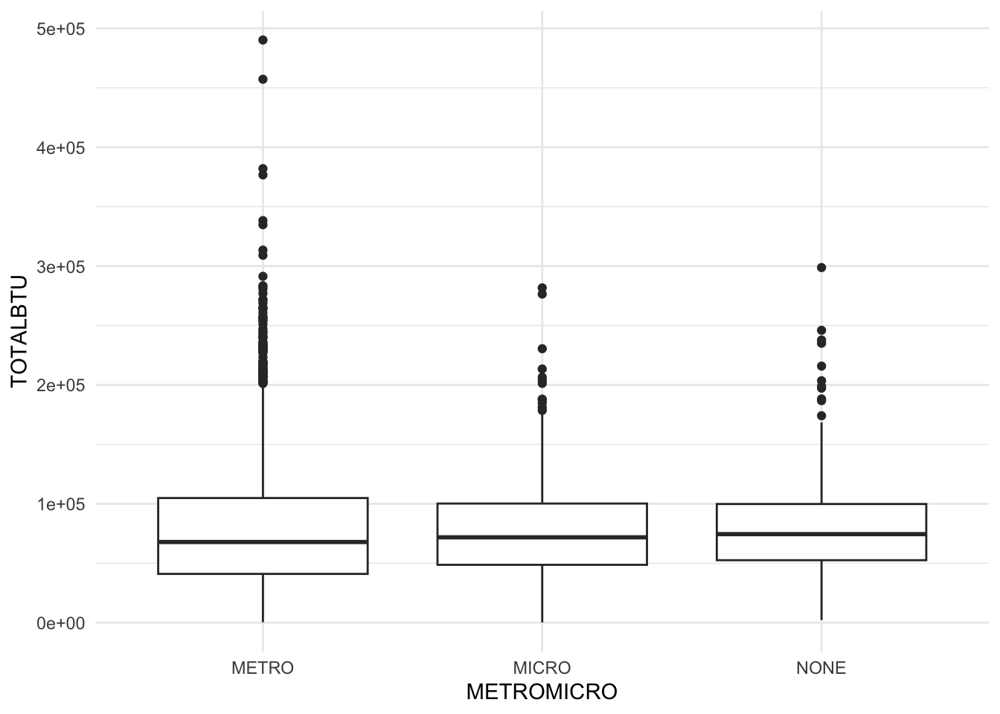
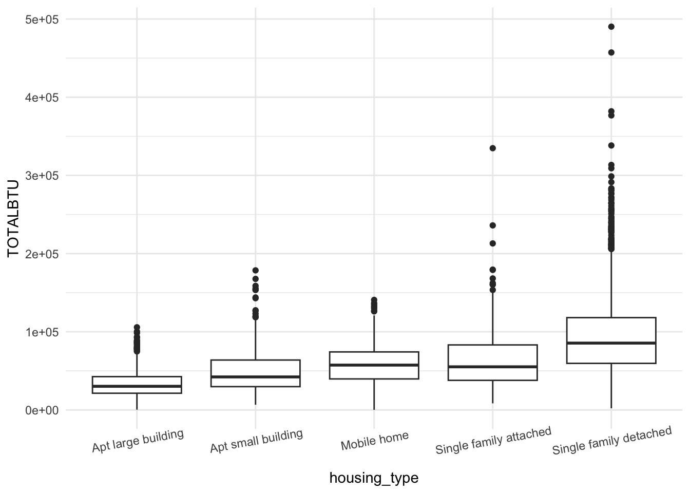
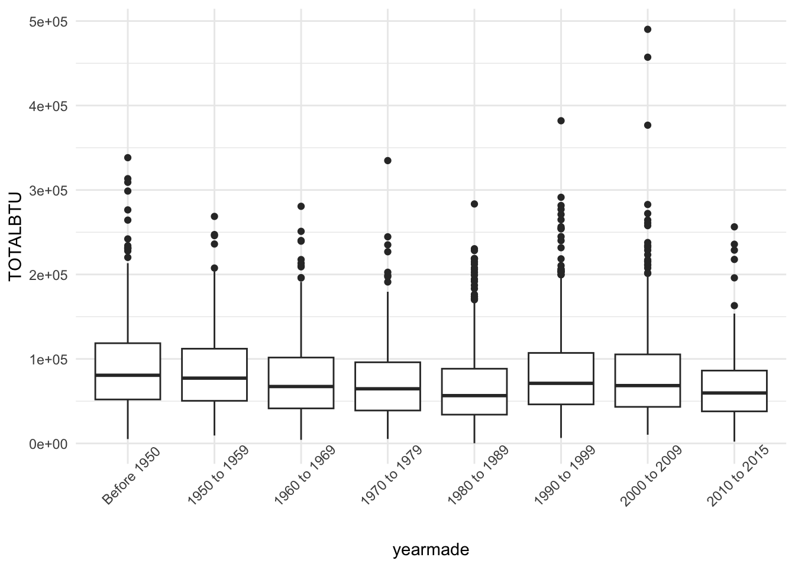
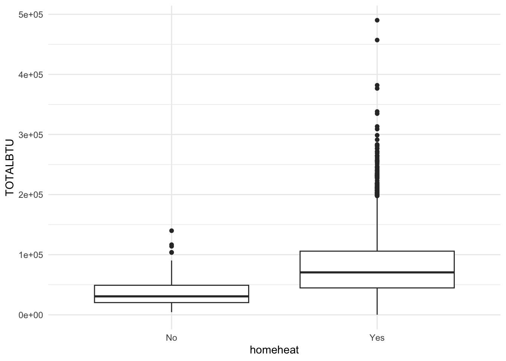
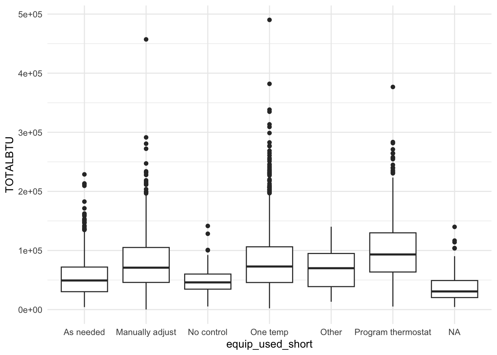
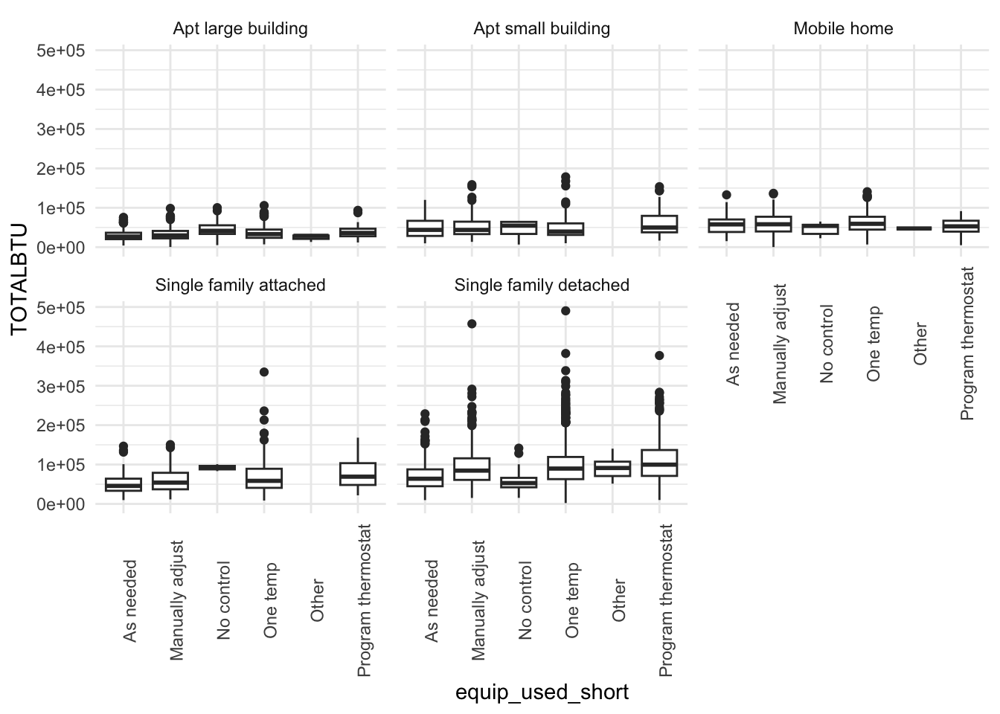
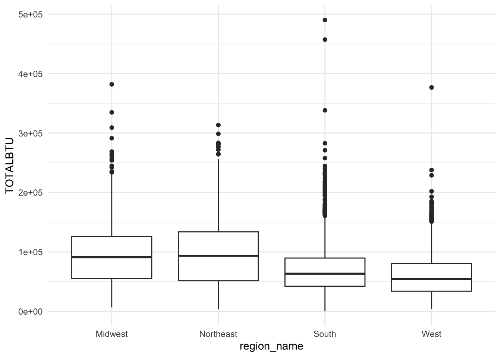
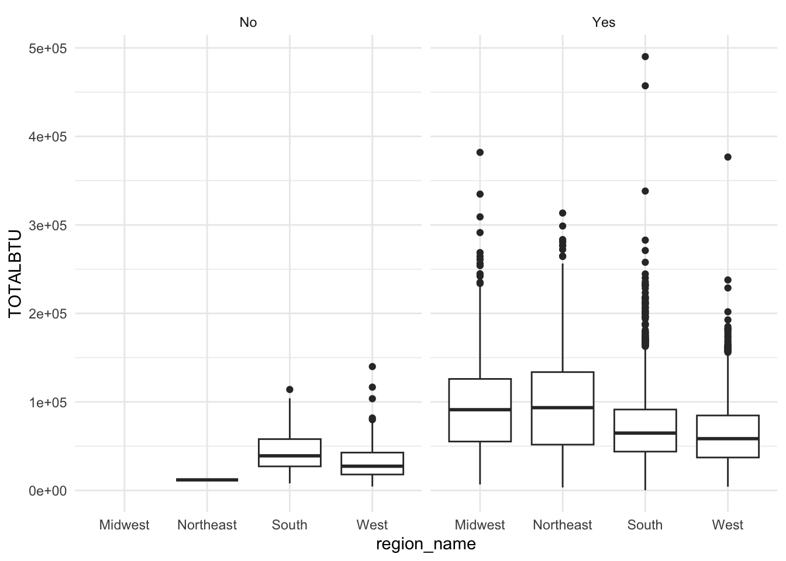

recs %>%
ggplot(aes(x = METROMICRO, y = TOTALBTU)) +
geom_boxplot() +
theme_minimal()
What impacts residential energy use across different cities and states?
In this section: investigating differences in total energy use between metropolitan and rural regions, different types of houses, different home ages, heating behavior, equipment usage, and geographic region. Graphs have not been styled.
recs %>%
ggplot(aes(x = METROMICRO, y = TOTALBTU)) +
geom_boxplot() +
theme_minimal()
recs %>%
ggplot(aes(x = housing_type, y = TOTALBTU)) +
geom_boxplot() +
theme_minimal() +
theme(axis.text.x = element_text(angle = 10))
recs$yearmade <- factor(recs$yearmade, levels = c(
"Before 1950", "1950 to 1959", "1960 to 1969", "1970 to 1979", "1980 to 1989", "1990 to 1999", "2000 to 2009", "2010 to 2015"
))
recs %>%
ggplot(aes(x = yearmade, y = TOTALBTU)) +
geom_boxplot() +
theme_minimal() +
theme(axis.text.x = element_text(angle = 45))
# does the home use space heating
recs %>%
ggplot(aes(x = homeheat, y = TOTALBTU)) +
geom_boxplot() +
theme_minimal()
recs %>%
ggplot(aes(x = equip_used_short, y = TOTALBTU)) +
geom_boxplot() +
theme_minimal()
recs %>%
filter(!is.na(equip_used_short),
# equip_used_short != "No control"
) %>%
ggplot(aes(x = equip_used_short, y = TOTALBTU)) +
geom_boxplot() +
facet_wrap(vars(housing_type)) +
theme_minimal() +
theme(axis.text.x = element_text(angle = 90))

We see in the initial graph that surprisingly, homes where the residents do not have control over their heating appear to use lower energy. When we disaggregate this variable by home type, however, this does not appear to be universally true.
# want: percentage of no-control homes that are also apartments
recs %>%
group_by(equip_used_short, housing_type) %>%
summarize(n = n())`summarise()` has grouped output by 'equip_used_short'. You can override using
the `.groups` argument.# A tibble: 33 × 3
# Groups: equip_used_short [7]
equip_used_short housing_type n
<chr> <chr> <int>
1 As needed Apt large building 186
2 As needed Apt small building 62
3 As needed Mobile home 47
4 As needed Single family attached 75
5 As needed Single family detached 391
6 Manually adjust Apt large building 173
7 Manually adjust Apt small building 70
8 Manually adjust Mobile home 53
9 Manually adjust Single family attached 137
10 Manually adjust Single family detached 981
# ℹ 23 more rowsWith a closer look at the data, we find that a relatively small proportion of households have no control over their equipment use, and of that proportion, over half live in large apartment buildings, which tend to have lower overall energy use. Our surprisingly low energy use for “no control” homes can thus be attributed to this correlation. If we disregard the “no control” and “NA”
recs %>%
ggplot(aes(x = region_name, y = TOTALBTU)) +
geom_boxplot() +
theme_minimal()
recs %>%
ggplot(aes(x = region_name, y = TOTALBTU)) +
geom_boxplot() +
facet_wrap(vars(homeheat)) +
theme_minimal()

If we want to dive into regional differences, it might be useful to look at variables tracking cold, heat, and energy use for climate control. Might also be helpful to look at some general breakdowns of where this energy use comes from, but that might be difficult given how many factors there are.